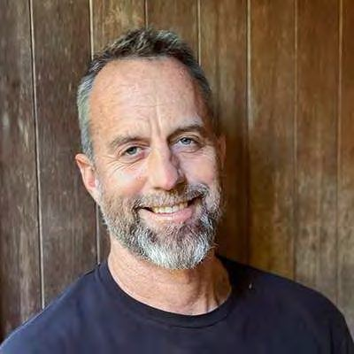

This site is shared with project stakeholders for discussion purposes. Enter the access code to continue.
Need access? Contact erik@nowcitylabs.com
Now City leadership, senior advisors, and the Maxumal development partnership.
Now City operates as a district strategy and systems integrator, supported by a growing bench of development, construction, infrastructure, and operating partners. This model allows Phase 1 and early district phases to be executed by experienced local and regional teams with direct market knowledge, while Now City maintains continuity of vision, performance standards, and long-term district control. As the platform scales, execution capacity scales with it - through joint ventures, operating partnerships, and institutional collaborators aligned with district-level outcomes.

Erik is a systems thinker focused on aligning capital, design, and operations into development that is financially viable, operationally sound, and grounded in care. He brings 30 years of property operations and 20 years in technology, business development, and startup leadership.
Ritchie leads design, development, and operations. B.Architecture from Carnegie Mellon, MS in Architecture and Urban Design from Columbia, MBA candidate at Johns Hopkins. Previously a mobility planner at Lyft in New York, where he led bike-share expansion, and later supported capital raise and development of a 1,000-unit multifamily mixed-use project in NYC.
We work with senior advisors whose expertise is directly load-bearing for the work.
Michael is an economist, attorney, and one of the architects of the 2012 JOBS Act. Adjunct Professor at Bard Business School and author of Put Your Money Where Your Life Is, The Local Economy Solution, and others. He advises Now City on community-rooted ownership, local capital formation, and finance models that keep wealth in place.
Neal, FAIA, FCNU, directs the western U.S. urban and architectural design practice at Torti Gallas. His work focuses on master plans, form-based codes, and the public realm - especially the revitalization of declining urban centers, brownfields, and aging suburbs. He advises Now City on urbanism, master planning, and entitlement strategy.
The Maxumal executive team brings design, engineering, finance, and delivery experience directly relevant to building 1,000 homes well, fast, and at attainable cost.
Carl has spent more than 20 years designing and building custom homes and multifamily live/work lofts in downtown San Diego and across California. As chairman of the redevelopment plan subcommittee of San Diego's Project Area Committee, he helped shape the plan that turned central downtown San Diego into the economic and cultural hub it is today. A licensed general contractor, Carl is the designer of the SIPrails system and leads design and innovation at Maxumal. For the district, that means homes engineered for fabrication from the first sketch. B.A., Cal Poly San Luis Obispo.
Nancy is a business strategist with a 20-year record of generating over $3B in added value for Fortune 100 companies, with deep capability in market analysis, financial modeling, and operational execution. At Maxumal she leads strategy and operations. Her focus for West Salem is the manufacturing economics: ensuring off-site fabrication actually delivers the cost, schedule, and quality advantages the district's attainable housing program depends on. MBA, George Mason University.
LeRoy founded New West Homes and built more than 100 custom prefab homes across Southern California, then led the Yellow Hills Ranch project: a 300-home sustainable community on 4,700 acres with a solar farm and nature preserve. Few people have taken prefab housing from factory to finished neighborhood at this scale. He brings that delivery experience, plus operations leadership of 120-person technical teams, to the district's phased housing program.
Randy, a CPA with over 20 years in real estate accounting and tax strategy, has secured Low Income Housing Tax Credit and bond financing for 375 affordable housing communities, primarily in the Salt Lake City market, without a single failed application. Attainable rents are made in the capital stack, and Randy's command of LIHTC, bond, and layered public-private financing directly serves the district's commitment to housing calibrated to local incomes. B.S. with honors, Brigham Young University; AICPA and UACPA.
Dan, PE/SE, is a forensic structural engineer with unlimited-height qualifications, licensed in seven states, whose portfolio includes the New York-New York Hotel & Casino Statue of Liberty, the MGM Theme Park, and decades of high-profile commercial and residential work. He directs the engineering of the SIPrails system and oversees final working drawings, so the district's fabricated buildings carry conventional-or-better structural standards. B.S. Architectural Engineering, Cal Poly San Luis Obispo.
Carol has spent over 20 years assembling A/E/C teams and carrying high-stakes projects through public hearings to approval, with executive master-planning experience on community, resort, and mixed-use ventures totaling over $7B in market value, and over $800M in MOU pre-sale agreements secured. Districts live or die in the public process, and Carol's community outreach and entitlement work is aimed at exactly that: earning Salem's confidence hearing by hearing. She has worked across the US and ten countries and is a published author.
AI-native development, advanced modeling, data intelligence, automation, and modern delivery methods reduce design friction, compress timelines, lower soft costs, and provide the reporting backbone institutional capital now requires.
Wellness, prosperity, and ecology data-driven community design.
Modern methods that reduce cost, shorten schedules & minimize waste.
Integrated energy, water & mobility systems that cut OpEx & boost resilience.
Stacked incentives + carbon & brand capital to enhance returns.